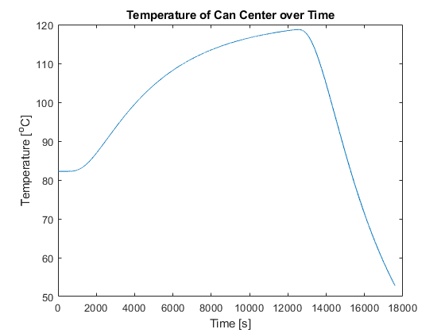
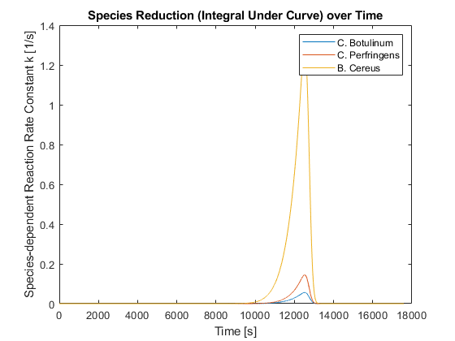
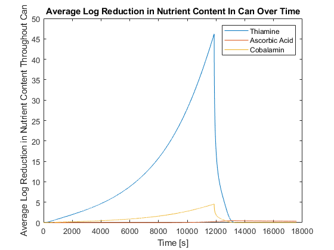

clc;
clear;
close all;
fill_temp = 180;
fill_temp = f_to_c(fill_temp);
steam_temp = 250;
steam_temp = f_to_c(steam_temp);
exit_temp = 100;
cool_water_temp_min = 50;
cool_water_temp_max = 60;
exit_temp = f_to_c(exit_temp);
cool_water_temp_min = f_to_c(cool_water_temp_min);
cool_water_temp_max = f_to_c(cool_water_temp_max);
cool_water_temp = mean([cool_water_temp_min, cool_water_temp_max]);
moisture_content_min = 45;
moisture_content_max = 50;
can_diameter = 4.25;
can_diameter = in_to_cm(can_diameter);
t_ea = 27;
t_d250 = 246.9;
aa_ea = 24;
aa_d250 = 1.12;
c_ea = 24;
c_d250 = 1.94;
t_ea = kcal_to_j(t_ea);
aa_ea = kcal_to_j(aa_ea);
c_ea = kcal_to_j(c_ea);
aa_d250 = days_to_min(aa_d250);
c_d250 = days_to_min(c_d250);
cb_ea = 64;
cb_d250 = 0.2;
cp_ea = 72;
cp_d250 = 0.04;
bc_ea = 65;
bc_d250 = 0.008;
cb_ea = kcal_to_j(cb_ea);
cp_ea = kcal_to_j(cp_ea);
bc_ea = kcal_to_j(bc_ea);
protein = 0.00;
fat = 0.00;
carbohydrate = 51.11 / 100;
fiber = 1.1 / 100;
moisture_content = 1 - protein - fat - carbohydrate - fiber;
ash = 0.00 / 100;
if moisture_content < (moisture_content_min / 100)
moisture_content = moisture_content_min / 100;
elseif moisture_content > (moisture_content_max / 100)
moisture_content = (moisture_content_max / 100);
ash = 1 - protein - fat - carbohydrate - fiber - moisture_content;
end
delt = 1;
M = 4;
t_food = fill_temp;
alpha = choi_okos_alpha(t_food, protein, fat, carbohydrate, fiber, ash, moisture_content);
delx = sqrt(M * delt * alpha);
delx_cm = delx * 100;
layers = round((can_diameter / 2) / delx_cm) + 1;
n = layers;
k = choi_okos_k(t_food, protein, fat, carbohydrate, fiber, ash, moisture_content);
rho = choi_okos_density(t_food, protein, fat, carbohydrate, fiber, ash, moisture_content);
cp = choi_okos_cp(t_food, protein, fat, carbohydrate, fiber, ash, moisture_content);
h_steam = 1/(1/6000 + 1/166);
h_water = 1/(1/300 + 1/166);
t = 0;
T = ones(1, layers) * t_food;
T_new = T;
heating_center = [];
k_cb = thermal_reduction(cb_d250, cb_ea, T(1));
k_cp = thermal_reduction(cp_d250, cp_ea, T(1));
k_bc = thermal_reduction(bc_d250, bc_ea, T(1));
k_t = thermal_reduction(t_d250, t_ea, T(1));
k_aa = thermal_reduction(aa_d250, aa_ea, T(1));
k_c = thermal_reduction(c_d250, c_ea, T(1));
t_avg = [];
aa_avg = [];
c_avg = [];
k_t_avg = [];
k_aa_avg = [];
k_c_avg = [];
lnreduction_cb = 0;
lnreduction_cp = 0;
lnreduction_bc = 0;
lnreduction_t = 0;
lnreduction_aa = 0;
lnreduction_c = 0;
while lnreduction_cb < 12
t = t + delt;
while n > 0
if n == 1
alpha = choi_okos_alpha(T(n), protein, fat, carbohydrate, fiber, ash, moisture_content);
M = m_calc(delt, alpha, delx);
T_new(1) = T_center(M, T(2), T(1));
heating_center = [heating_center, T_new(1)];
k_cb = [k_cb, thermal_reduction(cb_d250, cb_ea, T_new(1))];
k_cp = [k_cp, thermal_reduction(cp_d250, cp_ea, T_new(1))];
k_bc = [k_bc, thermal_reduction(bc_d250, bc_ea, T_new(1))];
k_t = [k_t, thermal_reduction(t_d250, t_ea, T_new(1))];
k_aa = [k_aa, thermal_reduction(aa_d250, aa_ea, T_new(1))];
k_c = [k_c, thermal_reduction(c_d250, c_ea, T_new(1))];
k_t_avg = [k_t_avg, thermal_reduction(t_d250, t_ea, T_new(n))];
k_aa_avg = [k_aa, thermal_reduction(aa_d250, aa_ea, T_new(n))];
k_c_avg = [k_c_avg, thermal_reduction(c_d250, c_ea, T_new(n))];
elseif n == layers
k = choi_okos_k(T(n), protein, fat, carbohydrate, fiber, ash, moisture_content);
rho = choi_okos_density(T(n), protein, fat, carbohydrate, fiber, ash, moisture_content);
cp = choi_okos_cp(T(n), protein, fat, carbohydrate, fiber, ash, moisture_content);
T_new(n) = T_outside(T(n), h_steam, n, delx, steam_temp, k, T(n-1), rho, cp, delt) + T(n);
k_t_avg = [k_t_avg, thermal_reduction(t_d250, t_ea, T_new(n))];
k_aa_avg = [k_aa, thermal_reduction(aa_d250, aa_ea, T_new(n))];
k_c_avg = [k_c_avg, thermal_reduction(c_d250, c_ea, T_new(n))];
else
alpha = choi_okos_alpha(T(n), protein, fat, carbohydrate, fiber, ash, moisture_content);
M = m_calc(delt, alpha, delx);
T_new(n) = T_other(n, M, T(n+1), T(n), T(n-1));
k_t_avg = [k_t_avg, thermal_reduction(t_d250, t_ea, T_new(n))];
k_aa_avg = [k_aa, thermal_reduction(aa_d250, aa_ea, T_new(n))];
k_c_avg = [k_c_avg, thermal_reduction(c_d250, c_ea, T_new(n))];
end
n = n - 1;
end
T = T_new;
n = layers;
t_avg = [t_avg, mean(k_t_avg)];
aa_avg = [aa_avg, mean(k_aa_avg)];
c_avg = [c_avg, mean(k_c_avg)];
k_t_avg = [];
k_aa_avg = [];
k_c_avg = [];
lnreduction_cb = trapz(k_cb);
lnreduction_cp = trapz(k_cp);
lnreduction_bc = trapz(k_bc);
lnreduction_t = trapz(k_t);
lnreduction_aa = trapz(k_aa);
lnreduction_c = trapz(k_c);
end
t_hours = t / 3600;
fprintf('The time to reach the minimum sterilization requirement is %.2f hours.\n', t_hours);
fprintf('The maximum temperature of the center of the can is %.1f degrees C.\n', T(1));
while mean(T) > exit_temp
t = t + delt;
while n > 0
if n == 1
alpha = choi_okos_alpha(T(n), protein, fat, carbohydrate, fiber, ash, moisture_content);
M = m_calc(delt, alpha, delx);
T_new(1) = T_center(M, T(2), T(1));
heating_center = [heating_center, T_new(1)];
k_cb = [k_cb, thermal_reduction(cb_d250, cb_ea, T_new(1))];
k_cp = [k_cp, thermal_reduction(cp_d250, cp_ea, T_new(1))];
k_bc = [k_bc, thermal_reduction(bc_d250, bc_ea, T_new(1))];
k_t = [k_t, thermal_reduction(t_d250, t_ea, T_new(1))];
k_aa = [k_aa, thermal_reduction(aa_d250, aa_ea, T_new(1))];
k_c = [k_c, thermal_reduction(c_d250, c_ea, T_new(1))];
k_t_avg = [k_t_avg, thermal_reduction(t_d250, t_ea, T_new(n))];
k_aa_avg = [k_aa, thermal_reduction(aa_d250, aa_ea, T_new(n))];
k_c_avg = [k_c_avg, thermal_reduction(c_d250, c_ea, T_new(n))];
elseif n == layers
k = choi_okos_k(T(n), protein, fat, carbohydrate, fiber, ash, moisture_content);
rho = choi_okos_density(T(n), protein, fat, carbohydrate, fiber, ash, moisture_content);
cp = choi_okos_cp(T(n), protein, fat, carbohydrate, fiber, ash, moisture_content);
T_new(n) = T_outside(T(n), h_water, n, delx, cool_water_temp, k, T(n-1), rho, cp, delt) + T(n);
k_t_avg = [k_t_avg, thermal_reduction(t_d250, t_ea, T_new(n))];
k_aa_avg = [k_aa, thermal_reduction(aa_d250, aa_ea, T_new(n))];
k_c_avg = [k_c_avg, thermal_reduction(c_d250, c_ea, T_new(n))];
else
alpha = choi_okos_alpha(T(n), protein, fat, carbohydrate, fiber, ash, moisture_content);
M = m_calc(delt, alpha, delx);
T_new(n) = T_other(n, M, T(n+1), T(n), T(n-1));
k_t_avg = [k_t_avg, thermal_reduction(t_d250, t_ea, T_new(n))];
k_aa_avg = [k_aa, thermal_reduction(aa_d250, aa_ea, T_new(n))];
k_c_avg = [k_c_avg, thermal_reduction(c_d250, c_ea, T_new(n))];
end
n = n - 1;
end
t_avg = [t_avg, mean(k_t_avg)];
aa_avg = [aa_avg, mean(k_aa_avg)];
c_avg = [c_avg, mean(k_c_avg)];
k_t_avg = [];
k_aa_avg = [];
k_c_avg = [];
T = T_new;
n = layers;
lnreduction_cb = trapz(k_cb);
lnreduction_cp = trapz(k_cp);
lnreduction_bc = trapz(k_bc);
lnreduction_t = trapz(k_t);
lnreduction_aa = trapz(k_aa);
lnreduction_c = trapz(k_c);
end
t_hours = t / 3600;
fprintf('The total sterilization and cooling process takes %.2f hours.\n', t_hours);
fprintf('The total reduction in C. Botulinum is %.2f.\n', lnreduction_cb);
fprintf('The total reduction in C. Perfringens is %.2f.\n', lnreduction_cp);
fprintf('The total reduction in B. Cereus is %.2f.\n', lnreduction_bc)
fprintf('The total reduction in Thiamine is %.2f.\n', lnreduction_t)
fprintf('The total reduction in Ascorbic Acid is %.2f.\n', lnreduction_aa)
fprintf('The total reduction in Cobalamin is %.2f.\n', lnreduction_c)
t_logred_avg = t_avg .* t;
aa_logred_avg = aa_avg .* t;
c_logred_avg = c_avg .* t;
figure
plot(heating_center)
xlabel('Time [s]')
ylabel('Temperature [^oC]')
title('Temperature of Can Center over Time')
hold off
figure
plot(k_cb);
hold on
plot(k_cp);
plot(k_bc);
xlabel('Time [s]')
ylabel('Species-dependent Reaction Rate Constant k [1/s]')
title('Species Reduction (Integral Under Curve) over Time')
legend('C. Botulinum', 'C. Perfringens', 'B. Cereus')
hold off
figure
plot(t_logred_avg);
hold on
plot(aa_logred_avg);
plot(c_logred_avg);
xlabel('Time [s]')
ylabel('Average Log Reduction in Nutrient Content Throughout Can')
title('Average Log Reduction in Nutrient Content In Can Over Time')
legend('Thiamine', 'Ascorbic Acid', 'Cobalamin')
hold off
function [t_c] = f_to_c(t_f)
t_c = 5/9 * (t_f - 32);
end
function [cm] = in_to_cm(in)
cm = in * 2.54;
end
function [j] = kcal_to_j(kcal)
j = kcal * 4184;
end
function [min] = days_to_min(days)
min = days * 24 * 60;
end
function [density] = choi_okos_density(t_food, protein, fat, carbohydrate, ...
fiber, ash, moisture_content)
p_density = 1.3299e3 - 5.1840e-1 * t_food;
fat_density = 9.2559e2 - 4.1757e-1 * t_food;
c_density = 1.5991e3 - 3.1046e-1 * t_food;
fiber_density = 1.3115e3 - 3.6589e-1 * t_food;
a_density = 2.42338e3 - 2.8063e-1 * t_food;
w_density = 9.9718e2 + 3.1439e-3 * t_food - 3.7574e-3 * t_food ^ 2;
density = (protein * p_density) + (fat * fat_density) + ...
(carbohydrate * c_density) + (fiber * fiber_density) + ...
(ash * a_density) + (moisture_content * w_density);
end
function [cp] = choi_okos_cp(t_food, protein, fat, carbohydrate, fiber, ...
ash, moisture_content)
p_cp = 2.0082e3 + 1.2089 * t_food - 1.3129e-3 * t_food ^ 2;
fat_cp = 1.9842e3 + 1.4733 * t_food - 4.8008e-3 * t_food ^ 2;
c_cp = 1.5488e3 + 1.9625 * t_food - 5.9399e-3 * t_food ^ 2;
fiber_cp = 1.8459e3 + 1.8306 * t_food - 4.6509e-3 * t_food ^ 2;
a_cp = 1.0926e3 + 1.8896 * t_food - 3.6817e-3 * t_food ^ 2;
w_cp = 4.1762e3 - 9.0864e-2 * t_food + 5.4731e-3 * t_food ^ 2;
cp = (protein * p_cp) + (fat * fat_cp) + (carbohydrate * c_cp) + ...
(fiber * fiber_cp) + (ash * a_cp) + ...
(moisture_content * w_cp);
end
function [k] = choi_okos_k(t_food, protein, fat, carbohydrate, fiber, ash,...
moisture_content)
p_k = 1.7881e-1 + 1.1958e-3 * t_food - 2.7178e-6 * t_food ^ 2;
fat_k = 1.8071e-1 - 2.7604e-3 * t_food - 1.7749e-7 * t_food ^ 2;
c_k = 2.0141e-1 + 1.3874e-3 * t_food - 4.3312e-6 * t_food ^ 2;
fiber_k = 1.8331e-1 + 1.2497e-3 * t_food - 3.1683e-6 * t_food ^ 2;
a_k = 3.2962e-1 + 1.4011e-3 * t_food - 2.9069e-6 * t_food ^ 2;
w_k = 5.7109e-1 + 1.7625e-3 * t_food - 6.7036e-6 * t_food ^ 2;
k = (protein * p_k) + (fat * fat_k) + (carbohydrate * c_k) + ...
(fiber * fiber_k) + (ash * a_k) + (moisture_content * w_k);
end
function [alpha] = choi_okos_alpha(t_food, protein, fat, carbohydrate, ...
fiber, ash, moisture_content)
p_a = 6.8714e-8 + 4.7578e-10 * t_food - 1.4646e-12 * t_food ^ 2;
fat_a = 9.8777e-8 - 1.2569e-11 * t_food - 3.8286e-14 * t_food ^ 2;
c_a = 8.8042e-8 + 5.3052e-10 * t_food - 2.3218e-12 * t_food ^ 2;
fiber_a = 7.3976e-8 + 5.1902e-10 * t_food - 2.2202e-12 * t_food ^ 2;
a_a = 1.2461e-7 + 3.7321e-10 * t_food - 1.2244e-12 * t_food ^ 2;
w_a = 1.3168e-7 + 6.2477e-10 * t_food - 2.4022e-12 * t_food ^ 2;
alpha = (protein * p_a) + (fat * fat_a) + (carbohydrate * c_a) + ...
(fiber * fiber_a) + (ash * a_a) + (moisture_content * w_a);
end
function [M] = m_calc(delt, alpha, delx)
M = (delx ^ 2) / (alpha * delt);
if M < 4
M = 4;
end
end
function [T] = T_center(M, T1, T0)
T = (4 / M) * T1 + ((M - 4) / M) * T0;
end
function [del_t] = T_outside(T, h, r, delx, steam_temp, k, T1, rho, cp, delt)
del_t = (delt * (((h * 2 * pi * r * delx * (steam_temp - T)) - (k * 2 * (r - (1/2)) * (T - T1)))/(rho * cp * (((r * delx) ^ 2) - (((r - (1/2)) * delx) ^ 2)))));
end
function [T] = T_other(r, M, T2, T1, T)
a = ((2 * r) + 1) / (2 * r);
b = M - 2;
c = ((2 * r) - 1) / (2 * r);
T = (1 / M) * ((a * T2) + (b * T1) + (c * T));
end
function [k121] = thermal_reduction(d250, ea, temp)
k250 = 2.303 / d250;
t_ref = f_to_c(250);
R_const = 8.314;
k0 = k250 / exp((-1 * ea) / (R_const * t_ref));
k121 = k0 * exp((-1 * ea) / (R_const * temp));
end
The time to reach the minimum sterilization requirement is 3.30 hours.
The maximum temperature of the center of the can is 118.3 degrees C.
The total sterilization and cooling process takes 4.89 hours.
The total reduction in C. Botulinum is 53.03.
The total reduction in C. Perfringens is 125.83.
The total reduction in B. Cereus is 1207.12.
The total reduction in Thiamine is 1.67.
The total reduction in Ascorbic Acid is 0.35.
The total reduction in Cobalamin is 0.20.
  